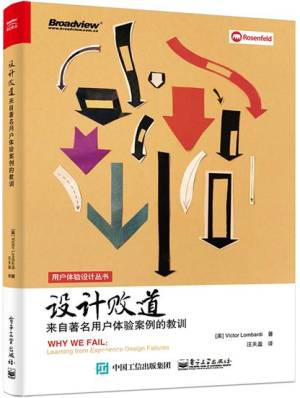
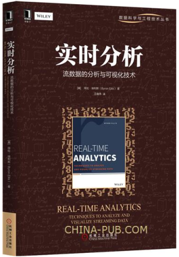
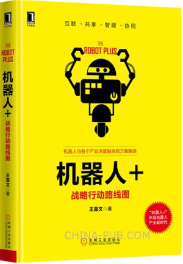
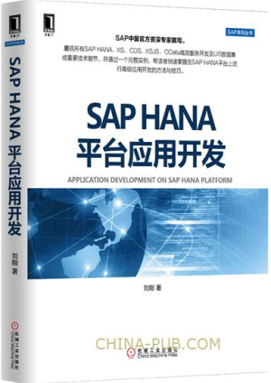
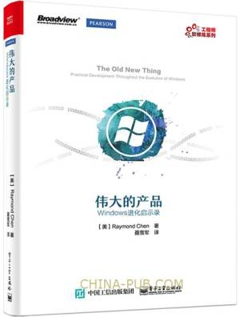
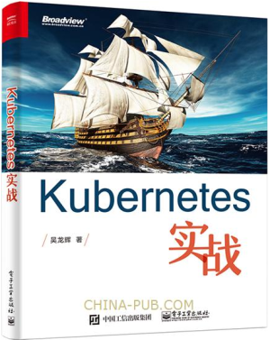
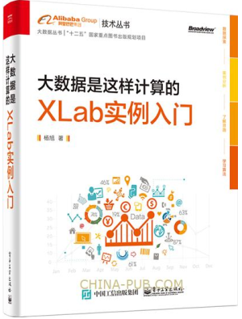

犹太人爱书,也是世界上唯一一个没有文盲的民族，就连犹太人的乞丐也是离不开书的。
01
设计败道：来自著名用户体验案例的教训
适合人员：产品经理、产品设计人员及创业人员

设计败道：来自著名用户体验案例的教训
作者： （美）Victor Lombardi
￥56.25
产品的失败有很多方面的原因，本书重点关注由于用户体验不佳而导致的失败。本书以10个产品作为案例，深入分析其在用户体验上失败的原因，并提出在产品设计中避免失败的用户体验的方法。这10个产品包括4个网站（Classmates.com、Wave、Pownce，以及Wesabe），两项服务（Plaxo和OpenID），一个软件包（Final Cut Pro X），一个操作系统（塞班），还有两个基于硬件的产品（iDrive和Zune）。 对于产品经理、产品设计人员及创业人员，本书帮助提供新颖的视角解读产品和用户，从失败中学习，进而避免失败。
▽长按下方二维码，购买此书
设计败道：来自著名用户体验案例的教训
出版日期：2016 年4月
开本：16开
页码：236
02
实时分析：流数据的分析与可视化技术
针对网站分析、大数据、流数据和移动数据的可视化，以及业务数据流的挖掘和可视化，本书给出了深入的案例分析。
本书的“菜谱”式设计使你能够快速学习和实现不同的技术。

实时分析：流数据的分析与可视化技术
作者： （美）拜伦·埃利斯
￥59.25
本书内容包括：
·流数据系统和架构的深入探讨
·流数据的分析、存储和交付
·数据聚集计算以及处理集合的技巧
·数据仓库的选择和技术
针对网站分析、大数据、流数据和移动数据的可视化，以及业务数据流的挖掘和可视化，本书给出了深入的案例分析。本书的“菜谱”式设计使你能够快速学习和实现不同的技术。
▽长按下方二维码，购买此书
实时分析：流数据的分析与可视化技术
上架时间：2016-4-13
出版日期：2016 年4月
开本：16开
03
机器人+：战略行动路线图
机器人与各个产业深度融合的方案解读

机器人+：战略行动路线图
作者： 王喜文
￥36.75
▽长按下方二维码，购买此书
机器人+：战略行动路线图
上架时间：2016-4-13
出版日期：2016 年4月
开本：32开
04
SAP HANA平台应用开发
SAP中国官方资深专家撰写。

SAP HANA平台应用开发
作者： 刘刚
￥59.25
SAP中国官方资深专家撰写。 囊括所有SAP HANA、XS、CDS、XSJS、OData高效服务开发及UI5数据集成重要技术细节，并通过一个完整实例，帮读者快速掌握在SAP HANA平台上进行高级应用开发的方法与技巧。
▽长按下方二维码，购买此书

SAP HANA平台应用开发
出版日期：2016 年4月
开本：16开
05
你好哇，程序员漫话程序员面试求职、升职加薪、创业与生活
程序员提升素养、驰骋职场必读！含大量漫画，轻松阅读！
你好哇，程序员漫话程序员面试求职、升职加薪、创业与生活
作者： 安晓辉
￥36.75
《你好哇，程序员--漫话程序员面试求职、升职加薪、创业与生活》以漫画+幽默风趣的语言，形象、生动地刻画出程序员的世界。《你好哇，程序员--漫话程序员面试求职、升职加薪、创业与生活》涵盖了程序员工作与生活、创业的方方面面，如面试、求职、升职、加薪、加班、家庭，等等。程序员的喜怒哀乐，都暗含其中，具有非常高的阅读价值。作者作为一名程序员，具有多年的从业经验，难得的是文笔出众，通俗易懂，读者读来能快速产生深深共鸣。
▽长按下方二维码，购买此书
你好哇，程序员漫话程序员面试求职、升职加薪、创业与生活
出版日期：2016 年3月
开本：16开
页码：312
06
伟大的产品：Windows进化启示录
凭借在微软Windows 开发团队十多年的工作经验，
作者Raymond Chen 将向你揭示你不可不知的Windows 系统内幕。

伟大的产品：Windows进化启示录
作者： [美] Raymond Chen
￥74.25
《伟大的产品：Windows进化启示录》的许多内容都是讲述某项技术的来龙去脉，通过了解这些历史故事，你不仅可以更加透彻地理解Windows 的设计思想，还可以澄清一些由来已久的误解。
对于Windows 平台的开发者，阅读《伟大的产品：Windows进化启示录》有助于提高工作效率；而对于软件产品经理、UI 设计人员，则能从其中获得不少有益的启示。
▽长按下方二维码，购买此书
伟大的产品：Windows进化启示录
出版日期：2016 年3月
开本：16开
页码：476
07
Kubernetes实战
√ 一本围绕实战讲解Kubernetes如何落地的书
√ Kubernetes代表第三代 PaaS 技术尖端水平
√ 从基础架构到生态，全面解读容器集群管理
√ 集网络、存储、调度、大规模多示例于一身

Kubernetes实战
￥51.75
Docker的流行激活了一直不温不火的 PaaS，随之而来的是各类 Micro-PaaS的出现，Kubernetes是其中最具代表性的一员，它是 Google多年大规模容器管理技术的开源版本。越来越多的企业被迫面对互联网规模所带来的各类难题，而 Kubernetes以其优秀的理念和设计正在逐步形成新的技术标准，对于任何领域的运营总监、架构师和软件工程师来说，都是一个绝佳的突破机会。
《Kubernetes实战》以理论加实战的模式，结合大量案例由浅入深地讲解了 Kubernetes的各个方面，包括平台架构、基础核心功能、网络、安全和资源管理以及整个生态系统的组成，旨在帮助读者全面深入地掌握 Kubernetes+Docker的底层技术堆栈。
▽长按下方二维码，购买此书
Kubernetes实战
出版日期：2016 年3月
开本：16开
页码：284
08
大数据是这样计算的：XLab实例入门
本书适合对大数据分析感兴趣的读者阅读，也可供数据分析师、算法工程师等专业人员参考使用。

大数据是这样计算的：XLab实例入门
作者： 杨旭
￥59.25
本书适合对大数据分析感兴趣的读者阅读，也可供数据分析师、算法工程师等专业人员参考使用。
《大数据是这样计算的：XLab实例入门》侧重介绍大数据分析方法和算法的应用，选取了10个不同领域的真实数据集，针对每个数据的特点，选择适合的方法和算法，和读者一起体验数据探索、数据分析、建模预测的过程；通过实例计算的结果，读者会更加了解各种方法和算法的长处和局限。
《大数据是这样计算的：XLab实例入门》的实例都运行在大数据算法平台XLab上。
《大数据是这样计算的：XLab实例入门》适合对大数据分析感兴趣的读者阅读，也可供数据分析师、算法工程师等专业人员参考使用。
▽长按下方二维码，购买此书
大数据是这样计算的：XLab实例入门
出版日期：2016 年3月
开本：16开
页码：340
09
场景时代：构建移动互联网新商业体系
拥抱场景时代，从IT到DT时代的新机遇。
场景时代，抓住移动互联网下一个“风口”
场景时代：构建移动互联网新商业体系
作者： 陈虎东
￥35.28
▽长按下方二维码，购买此书
场景时代：构建移动互联网新商业体系
出版日期：2016 年4月
开本：32开
点击阅读原文，进入预售图书页面，更多新书等你赏阅
▽点击阅读原文，进入预售图书页面，更多新书等你赏阅
![]()